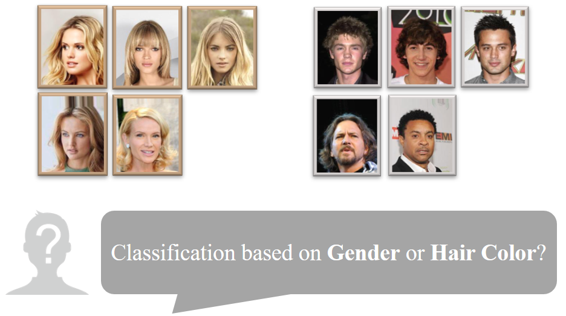
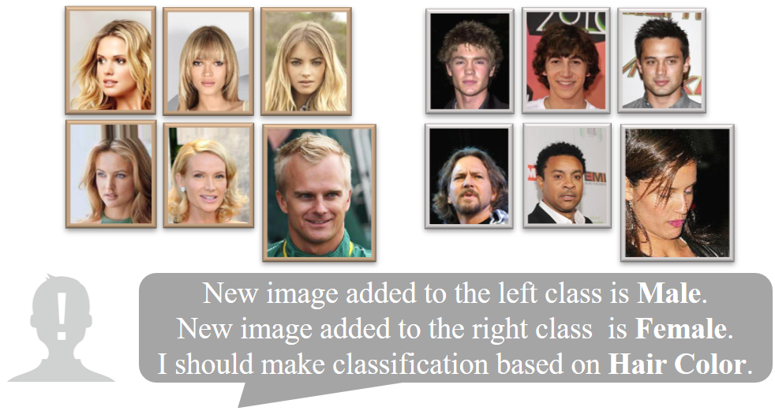

Counterexample Contrastive Learning for Spurious Correlation Elimination
|
|  |  |
而对于模型来说，上面的例子表明，认识到并强调反例在模型学习中的作用有可能解决去偏问题。所以，我们设计了一个实验来分析在什么情况下反例可以帮助模型避免虚假相关性。为了反映模型依赖虚假相关的程度，我们对不同级别的不平衡训练集采用不同的实验设置，并构建了一个与训练集中大多数样本偏见-任务对应关系不一致的测试集。具体来说，我们在CelebA上进行了实验，并基于标准的训练方法训练了头发颜色为任务目标、性别为偏见特征的二分类模型。如图3所示，在训练集中，金发女性图像和非金发男性图像时占多数的偏见-任务对应关系的样本，金发男性图像和非金发女性图像时占少数的偏见-任务对应关系的样本，即反例。测试集由金发男性图像和非金发女性图像组成，它们的偏见-任务对应关系与虚假相关性冲突（相反）。进一步，为了实验结果的可比性，我们保证训练样本总数不变，逐步增加反例在训练集中的比例ρ。准确率如图4所示。我们可以看到，随着反例比例的增加，准确率不断提高。实验结果表明，基于标准训练方法，当反例比例较低时，反例对虚假相关性消除的贡献有限；而随着其比例的增加，反例逐渐帮助模型避免虚假相关性。
反例如何帮助模型避免虚假相关性？
上一小节观察到，随着反例比例的增加，反例有助于模型避免虚假相关性。在本小节中，我们将进一步研究这一观察背后的机制。如之前的实验所示，错误分类的金发男性图像表明训练模型倾向于将反例视为与错误类别更相似样本。为了量化反例和正确类样本的相似程度，我们计算反例在特征空间中与正确类中心和错误类中心的相对位置。具体来说，给定类别`c`，我们将Relative Counterexample Affinity (RCA) 定义如下：
其中`dis(∙,∙)`是欧氏距离的计算函数，`CE(c)`是类别`c`中反例的索引集，`N=|CE(c)|`是反例的数量，`e_i`是反例的嵌入表示，`e_c`和`e_{\bar{c}}`是类别`c`的类中心表示以及平均其他类的类中心表示。较高的 RCA 值表明反例与其所属的类中心之间的相对距离较近，反之亦然。 我们在上述实验中计算了两类的 RCA。非金发女性图像是非金发类的反例，金发男性图像是金发类的反例。如图5所示，无论哪种类型的反例，RCA都随着反例比例的增加而不断增加。这意味着反例通过鼓励其表示接近来自同一类的大多数样本的表示来帮助模型避免虚假相关性。受此启发，在反例数量固定的前提下，我们提出了反例对比学习（CounterCL），它直接调节反例的特征表示来模仿上述反例比例增加的结果。
上述分析实验表明，反例通过鼓励其表示接近同一类的大多数样本的表示，从而有助于消除虚假相关性。受自监督对比学习的启发[2]，我们定义Counterexample Contrastive Learning (CounterCL) 损失，以此调整反例在特征空间的表示。如图6所示，我们以三元组`(x_{o ri}, x_{pos}, x_{n eg})`为例，`x_{pos}`是`x_{o ri}`的正反例，`x_{n eg}`是`x_{o ri}`的负反例。上述样本通过一次随机的变化（旋转或裁剪等）后，通过主干网络得到其特征空间的表示。这些表示可以分别计算分类任务的交叉熵损失和去偏的CounterCL损失。CounterCL损失形式化的定义如下：
其中，`J(i)`是样本`x_i`的正反例的索引集合，`K(i)`是样本`x_i`的负反例的索引集合，其他部分与自监督对比学习的定义一致。
我们在CelebA和UTKFace数据集上验证了方法的有效性。
比较结果
CelebA 和 UTKFace 的定量实验结果见表1和表2。在 CelebA 上，CounterCL 在所有任务中都达到了最好或次优的准确度。在 UTKFace 上，CounterCL 在两种偏见设置上都明显优于其他方法。这些结果验证了我们的方法在消除虚假相关方面的有效性。
在图7中，我们通过 UMAP可视化了CelebA 中 BlondHair 分类任务的样本的表示。不同颜色的点代表具有不同偏见或不同标签的样本。我们可以看到，Vanilla 获得的表示无论是发色还是性别都表现出更强的可分性。头发颜色和性别之间的分布一致性表明模型严重依赖偏见。而 CounterCL 获得的男性和女性图像的表示均匀地分散在特征空间中。头发颜色和性别之间明显的分布差异表明我们的方法使模型没有将偏见特征作为判别特征。
兼容性评估
CounterCL作为正则化项可以灵活地与其他方法结合使用。如表3所示，与原始方法相比，CounterCL可以提高大多数去偏方法的性能。具体来说，结合 CounterCL的LNL 和 EnD 可以显着提高至接近SoTA的性能。值得注意的是，一些结合 CounterCL 的方法可以比 CounterCL 更好地发挥反例的潜力。除了在不引入额外数据的情况下与其他方法结合之外，CounterCL 还可以轻松扩展以与现有的基于数据增强的方法结合。未来，我们正在努力探索融合增强的外部数据和内部反例以消除虚假相关性的可能性。
在这项工作中，我们引入反例这一概念来讨论在不引入额外数据的情况下对模型进行去偏的可能性。通过分析实验来研究反例何时以及如何帮助模型避免虚假相关性，我们提出 CounterCL 来利用有限的观测到的反例来调整特征表示。它与其他解决方案兼容，并且可以作为基于反事实数据增强的解决方案的补充。定量和定性实验验证了有效性。
除了将反例与增强的外部数据整合外，未来我们还将朝着以下两个方向努力：（1）以修改损失以外的方法利用反例，并且去除偏见标注的要求以提高实用性； (2) 探索反例在重训练之外的场景中的应用，例如，使用主动挑选的反例进行在线调试。
参考文献
[1] Aishwarya Agrawal, Dhruv Batra, Devi Parikh, and Aniruddha Kembhavi. 2018. Don’t just assume; look and answer: Overcoming priors for visual question answering. In Proceedings of the IEEE Conference on Computer Vision and Pattern Recognition. 4971–4980.
[2] Ting Chen, Simon Kornblith, Mohammad Norouzi, and Geoffrey Hinton. 2020. A simple framework for contrastive learning of visual representations. In International conference on machine learning. PMLR, 1597–1607.